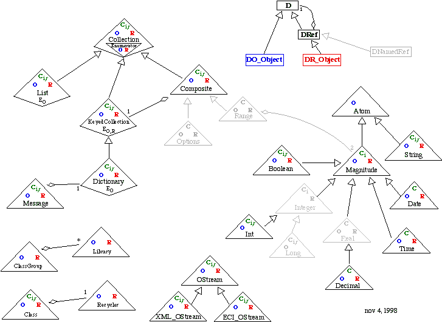

Destiny C++ | Overview
Class and Object Design
| rsl2D | R_D | Martin's
Questions
August 27, 1998
class digram finally updated Nov 1998
In Summary
The Destiny C++ standard is a way for arbitrarily complex C++ to work as seamlessly
as possible with, yet be independent of, RSL - so that RSL and C++ are as complementary
as possible and work together efficiently.
The Big Picture
Destiny's abstract design layer concept will allow pattern-oriented programming and visual representation of actual implementation in running systems, not just design. This will collapse and significantly speed up the software development and maintenance process. There are many practical barriers to this, however; this proposal is one step toward breaking them down. It is the approach taken for Granite Foundation 2.5, and will be the Foundation for version 3.
The Current Problem
C++ Resources are difficult to write in Foundation 2.2. There is no easy way to connect RSL and C++ beyond the most rudimentary needs. It is much easier to write RSL than C++, but RSL requires Foundation. We can't take our objects outside of Foundation because they are too tightly integrated.
Significant benefits can be realized from having object interrelationships represented or stored in a way that RSL understands. Notably, the abstract design layer is not possible without such reflective abilities. But to date it has not been clear how to do this for objects, or Resources, written "entirely" in C++.
The Solution
This strategy may or may not form the basis for the implementation of the third version of a system not unlike Granite Foundation. oh no, no, no! heh, heh, heh heh!
Relevant Externalities
Note: when I say an X class, I mean a class which is an X, that is, a class derived from X. This is like saying an animal.
|
Overview (this page) |
|
|
|
|
Martin's Questions, Russell's Answers
|
|
Class and Object Design updated 4 Sept
|
|
We would like to be able to write C++ which can work seamlessly along side of RSL, and we'd like to be able to use both languages where they are most appropriate. The power and dynamic flexibility of RSL comes partly from its fluid, reflective nature. An object to RSL is an active independent entity, whose data storage is an associative dictionary of instance variable names to objects. RSL can manipulate objects in ways not possible in compiled languages, and so fitting C++ objects into this model can be a challenge.
The central principle of this standard is:
The standard defines a set of classes that form the basis for all implementation. There are actually two classes for each "class"; the system relies on the idea of strongly-typed smart pointer classes (references) and their companion implementation classes.
The illustration below is the D class diagram. This is not a normal UML object model; for instance, Collection is not a class. There are five classes that compose the idea of Collection: DR_Collection, DO_Collection, DOC_Collection, DR_Enumerator, DO_Enumerator, each with separate ancestry. Illustrating every such class is not only visually confusing, but it shows few global patterns. See diagramming parallel class hierarchies for more detail on this particular problem of scale.

A composite object is one which is composed of other objects, that is, it has instance variables. Most C++ implementation using this system will fall under DOComposite, with appropriate counterpart DRef classes. The DOComposite superclass provides facilities that will allow these objects to be used from within Granite Foundation with as much flexibility as if they were pure RSL classes - far more useful than today's Resources.
Destiny C++ | Overview
Class and Object Design
| rsl2D | R_D | Martin's
Questions